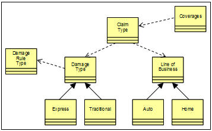

| Artifact: Variations Model (ART 0579) |
 |
|
The Variations Model is used to:
|
| Roles | Responsible: | Modified By: |
|---|---|---|
| Tasks | Input To: | Output From: |
| Main Description | Variation-oriented analysis (VOA) is the process of identifying aspects of something that are subject to change and variation and separating them out from the static aspects. We use the Variations Model artifact to capture variations of types, policies, data, localization, interfaces, processes, etc., enabling us to identify opportunities to externalize those points of variance, making our service design more robust and adaptable to change. The Variations Model is a key input to solutions employing a dynamic assembly approach to service invocation, such as those based on Composite Business Services (CBS) and WebSphere Business Services Fabric. Although it can be applied at various points of the lifecycle, we primarily build the Variations Model during SOMA Identification after we have modeled the business architecture and defined subsystems. Variations can be captured as text or more precisely using a domain-specific language as appropriate to the domain and environment. The process of designing software that supports externalization of variations is called Variation Oriented Design (VOD). The basic principles of variation-oriented design include:
Application of these rules of VOD help partition the system into changing and non-changing aspects. It makes the application of design pattern easier and enforcing the open-closed principle over the design and implementation. |
||||||||
|---|---|---|---|---|---|---|---|---|---|
| Notation | Commonality and VariationsIdentify commonality and variability within each subsystem and across subsystems.
VOA Type HierarchyFigure 1 below depicts an example of a type variations model, where entity types requiring similar but different handling are organized into a hierarchy that helps to relate and define those types.  |
| Templates | |
|---|---|
| Examples |
Commonality and variation can be identified during or following business modeling activities using processes, business context, and/or business rules as inputs. Understanding the business process and any dependencies on types of business entities is a suitable starting point for identifying variations. Once process modeling and decomposition is complete, we use interviews and/or workshops to identify variations using questions such as:
|
| Impact of not having | Variations are not explicitly identified and cannot be externalized, thus limiting future growth and evolution of system and business architecture. |
|---|---|
| Reasons for not needing | Subject solution is a one-shot systems that does not need to evolve into dynamically changing and evolving systems, or where systems are not to be maintained but serve a temporary purpose. |
| Checklists | |
|---|---|
| Supporting Materials |
| © Copyright IBM Corp. 1987, 2012 All Rights Reserved Property of IBM These materials are intended only for use as part of an IBM engagement |